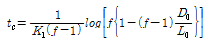
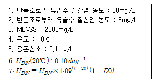
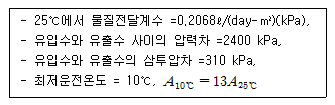
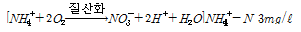
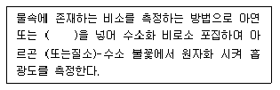
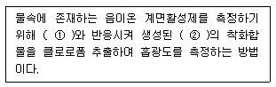
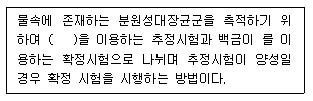

1과목: 수질오염개론
1. 하수 등의 유입으로 인한 하천 상태를 Whipple의 4지대로 나타낼 수 있다. 그 중 ‘활발한 분해지대’에 관한 내용으로 옳지 않은 것은?
2. 다음의 등온 흡착식 중 (1)한정된 표면만이 흡착에 이용되고 (2)표면에 흡착된 용질물질은 그 두께가 분자 한 개 정도의 두께이며 (3)흡착은 가역적이고 평형조건이 이루어졌다는 가정 하에 유도된 식은?
3. 금속 전도체와 전해질 용액을 통해서 흐르는 전류 중 금속을 통해 흐르는 전류의 특성으로 옳지 않은 것은?
4. 질산화미생물의 일반적 특성과 가장 거리가 먼 것은?
5. 무기화합물과 유기화합물의 일반적 차이점으로 옳지 않는 것은?
6. 어떤 하천의 BOD5가 220mg/L이고, BODu가 470mg/L이다. 이 파천의 탈산소계수(K1)의 값은? (단, 상용대수 기준)
7. 어떤 시료의 상물학적 분해 가능 유기물질의 농도가 37mg/L이며, 경험적인 분자식이 C6H11ON2 라고 할 때 이 물질의 이론적 최종 BOD는?
8. 유량400000 m3/day의 하천에 인구 20만명의 도시로부터 30000 m3/day의 유량으로 하수가 유입되고 있다. 하수가 유입되기 전 하천의 BOD는 0.5mg/ℓ이고, 유입 후 하천의 BOD를 2mg/ℓ 로 하기 위해서 하수처리장을 건설하려고 한다면 이 처리장의 BOD 제거 효율은? (단, 인구 1인당 BOD 바출량은 20g/day라 한다.)
9. 어느 하천의 DO가 8mg/ℓ, BODu는 10mg/ℓ이었다. 이 때 용존산소곡선(DO Sag Curve)에서의 임계점에 도달하는 시간은? (단, 온도는 20℃, DO 포화농도는 9.2mg/ℓ, K1=0.1/day, K2=0.2/day,

이다. 상용대수 기준)10. Glucose(C6H12O6)100mg/L 인 용액의 ThOD/TOC의 비는?
11. 다음 화합물 (C5H7O2N)에 대한 이론적인 BOD10/COD는? (단, 탈산소계수 0.1/day, base는 상용대수, 화합물은 100% 산화된(최종산물은 CO2, NH3, H2O), COD=BODU)
12. 호소의 영양상태를 평가하기위한 Carlson지수를 산정하기 위해 요구되는 Parameter와 가장 거리가 먼 것은?
13. Formaldehyde(CH2O) 500mg/ℓ의 이론적 COD값은?
14. 산소의 포화농도가 9 mg/ℓ인 하천에서 처음의 DO 농도가 6 mg/ℓ라면 물이 3일 유하 한 후의 하류에서의 DO부족량(mg/ℓ)은? (단, 최종 BOD=20mg/ℓ이며, K1과 K2는 각각 0.1day-1과 0.2day-1, 밑수는 상용대수이다.)
15. 방사성 물질인 스트론튬(Sr90)의 반감기가 29년이라면 주어진 양의 스트론튬(Sr90)이 99% 감소하는데 걸리는 시간은?
16. 글루코스(C6H12O6) 100mg/L 인 용액을 호기성 처리할 때 이론적으로 필요한 질소량(mg/L)은? (단, K1(상용대수)=0.1/day, BOD5:N=100:5 BODU=ThOD로 가정함)
17. 20℃에서 BOD8가 100mg/ℓ 이었다면 이 시료의 BOD3은? (단, K1(상용대수)=0.15/일)
18. 호수의 성층현상에 관한 설명으로 옳지 않은 것은?
19. 25℃, 2atm의 압력에 있는 메탄가스 20kg을 저장하는데 필요한 탱크의 부피는? (단, 이상기체의 법칙 적용, R=0.082Lㆍatm/molㆍK(표준상태기준))
20. 가성소다 제조공장에서 0.2%의 NaOH를 함유한 알칼리성 폐수가 배출되고 있다. 이 폐수 200톤을 완전히 중화하는데 90%의 H2SO4(비중 1.84)의 요구량은? (단, 폐수의 비중은 1.0 이다.)
2과목: 상하수도계획
21. 상수도시설인 완속 여과지에 관한 설명으로 옳지 않는 것은?
22. 하천수를 수원으로 하는 경우, 취수시설인 취수보에 관한 설명으로 옳지 않는 것은?
23. 슬러지탈수 방법 중 벨트프레스탈수기에 관한 내용으로 옳지 않는 것은? (단, 가압탈수기, 원심탈수기와 비교)
24. 하수도시설인 우수토실 중 수직 오리피스(고정식)형태에 관한 내용으로 옳지 않는 것은?
25. 자외선 하수 살균 소독의 장단점과 가장 거리가 먼 것은?
26. 하수관거 중 우수관거 및 합류관거의 유속 기준으로 옳은 것은?
27. 적정양수량의 정의에 관한 내용으로 옳은 것은?
28. 하수도 시설기준에 의한 우수관거 및 합류관거의 최소관경 표준은?
29. 배수면적이 50㎢인 지역의 우수량이 800m3/s일 때 이 지역의 강우강도(I)는 몇 mm/hr 인가? (단, 유출계수: 0.83, 우수량의 산출은 합리식 적용)
30. 하수배제방식 중 분류식에 관한 내용으로 옳지 않는 것은? (단, 합류식과 비교 기준)
31. 계획오수량에 관한 설명으로 옳지 않은 것은?
32. 하수 관거의 접합 방법 중 유수는 원활한 흐름이 되지만 굴착 깊이가 증가됨으로 공사비가 증대되고 펌프로 배수하는 지역에서는 양정이 높게 되는 단점이 있는 것은?
33. 펌프의 비교회전도에 관한 내용으로 옳은 것은?
34. 상수도시설인 취수탑의 취수구에 관한 내용과 가장 거리가 먼 것은?
35. 상수처리를 위한 침사지 구조에 관한 기준으로 옳지 않는 것은?
36. 회전수 5회/sec. 토출량 23m3/min. 전양전 8m의 터어빈 펌프의 비속도는?
37. 하수처리시설인 우수 침사지의 표면 부하율로 옳은 것은?
38. 상수 수원인 복류수에 관한 내용으로 옳지 않는 것은?
39. 펌프의 토출량은 200m3/min이며 흡입구의 유속이 2m/sec인 경우에 펌프의 흡입구경(mm)은?
40. 비교회전도(Ns)에 대한 다음 설명 중 옳지 않은 것은?
3과목: 수질오염방지기술
41. 인 제거를 위한 Sidestream 공정에 관한 설명으로 옳지 않는 것은?
42. Q=1000m3/d, SS=220mg/L인 하수를 처리하는 최초 침전지에서 하루 생산되는 슬러지의 양은? (단, 최초침전지 체류시간 2시간, SS제거율 60%, 생산슬러지 ? 중은 1.08, 함수율은 95%)
43. BOD 400mg/ℓ, 폐수량 1500m3/day의 공장폐수를 활성슬러지법으로 처리하고자 한다. BOD-MLSS 부하를 0.25kg/kgㆍday, MLSS 2500mg/ℓ로 운전한다면 포기조의 크기는?
44. 1일 평균 유량이 140,000m3인 방류수에 살균시설을 설치하고자 한다. 염소 주입량은 16mg/ℓ, 접촉탱크의 체류 시간은 최대유량(평균유량의 2배로 가정)을 기준하여 15분이 되는 크기로 한다. 이 때 살균에 필요한 접촉탱크 용적은?
45. 급속 혼화지의 설계시 속도 경사 G값은 G=(P/μV)0.5 의 식으로 결정한다. 여기서 G값의 차원은?
46. 질소 제거를 위한 파괴점 염소 주입법에 관한 설명과 가장 거리가 먼 것은?
47. 최종 BODu 1kg을 안정화 시킬 때 생산되는 메탄의 양(kg)은? (단, 유기물은 C6H12O6이며 혈기성 완전분해 기준)
48. 다음 조건에서 탈질화에 사용되는 anoxic 반응조의 체류시간(hr)은?

49. 역삼투장치로 하루에 600,000ℓ의 3차 처리된 유출수를 탈염하고자 한다. 이에 대한 자료가 다음과 같을 때, 요구되는 막 면적은?

50. 하수처리를 위해 생물막법의 효과적 적용이 필요한 경우와 가장 거리가 먼 것은?
51. C6H12O6를 혐기성 소화할 때 발생되는 가스 중 메탄가스는 이론적으로 몇 (부피)% 인가?
52. 염소 소독에 의한 세균의 사멸은 1차 반응 속도식에 따른다. 잔류염소 농도 0.4mg/L에서 2분간에 85%의 세균이 살균되었다면 99.9% 살균을 위해서 몇 분의 시간이 필요한가?
53. 200 mg/L Ethanol(C2H5OH)만을 함유한 10000m3/day의 공장폐수를 일반적 활성슬러지 공법으로 처리하려면 하루에 첨가하여야 하는 이론적인 질소량(kg)은? (단, Ethanol은 미생물에 완전 분해되고 독성이 없으며 이론적 BOD:N:P=100:5:1)
54. 5단계 Bardenpho프로세스에 관한 설명으로 옳지 않은 것은?
55. 질산화 반응에 관한 내용으로 옳은 것은?
56. 건조된 슬러지 무게의 1/5이 유기물질 4/5 가 무기물질이며 건조전 슬러지 함수율은 90%, 유기물질 비중은 1.0, 무기물질 비중이 2.5라면 건조전 슬러지 전체의 비중은?
57. 다음의 분리막을 이용한 수처리 방법 중 구동력이 정수압차가 아닌 것은?
58. 질산염(NO3-) 20mg/L를 탈질 시키는데 소모되는 메탄올(CH3OH)의 양은?
59. 생물학적 처리공정에서 질산화 반응은 다음의 총괄 반응식으로 나타낼수 있다.

가 질산화 되는데 요구되는 산소(O2)양(mg/ℓ)은?60. 염소 소독에 관련된 내용으로 옳지 않은 것은?
4과목: 수질오염공정시험기준
61. 전기전도도 측정계에 관한 내용으로 옳지 않는 것은?
62. 시료의 전처리를 위한 산분해법 중 질산-과염소산법에 관한 설명으로 옳지 않은 것은?
63. 다음 중 시료 최대보존기간이 가장 긴 항목은? (단, 적절한 보존방법을 적용한 경우임)
64. 자외선/가시선 분광법을 적용한 페놀류 측정에 관한 내용으로 옳지 않는 것은?
65. 관내의 공장폐수 및 하수유량 측정 장치의 벤튜리미터 유량계의 [최대유량 : 최소유량] 범위로 옳은 것은?
66. 다음은 비소-수소화물생성-원자흡수분광광도법에 관한 내용이다. ( )안에 옳은 내용은?

67. 다음 측정항목 중 시료의 보존방법이 다른 것은?
68. 생물화학적 산소요구량 측정시 사용되는 ATU 용액의 용도는?
69. 시험할 때 사용되는 용어의 정의로 옳지 않는 것은?(오류 신고가 접수된 문제입니다. 반드시 정답과 해설을 확인하시기 바랍니다.)
70. 다음은 자외선/가시선을 이용한 음이온 계면활성제 측정에 관한 내용이다. ( )안에 옳은 내용은?

71. 다음은 시험관법으로 분원성 대장균군을 측정하는 방법이다. ( )안에 옳은 내용은?

72. 니켈(Ni)을 자외선/가시선 분광법으로 측정할 때 니켈이온과 암모니아 약 알칼리성에서 반응하여 니켈착염을 생성하는 시약은?
73. 자외선/가시선으로 크롬 측정시 개요에 관한 내용으로 옳지 않는 것은?
74. 불소화합물 측정에 적용 가능한 시험방법과 가장 거리가 먼 것은? (단, 수질오염공정시험기준 기준)
75. 자외선/가시선 분광법으로 아연을 측정할 때 사용하는 시약인 아스코빈산나트륨은 어떤 이온이 공존하는 경우에 검수에 넣어주는가?
76. 측정항목이 황산이온인 시료의 보존방법 기준으로 옳은 것은?
77. 노말헥산 추출물질 시험법에 관한 설명으로 옳지 않는 것은?
78. 연속흐름법으로 시안 측정시 사용되는 흐름주입분석기에 관한 설명으로 옳지 않은 것은?
79. 물벼룩을 이용한 급성 독성 시험법에 적용되는 용어정의로 옳지 않는 것은?
80. “정확히 취하여” 라고 하는 것은 규정한 양의 약체를 무엇으로 눈금까지 취하는 것을 말하는가?
5과목: 수질환경관계법규
81. 수질 및 수생태계 정책심의위원회의 위원장을 제외한 위원회의 위원과 가장 거리가 먼 것은?
82. 환경기술인에 대한 교육기관으로 옳은 것은?
83. 설치허가를 받아야 하는 폐수배출시설 기준으로 옳은 것은?
84. 오염총량초과부과금 산정 방법 및 기준에 관련 된 내용으로 옳지 않은 것은?
85. 사업자 및 배출시설과 방지시설에 종사하는 자는 배출시설과 방지시설의 정상적인 운영, 관리를 위한 환경기술인의 업무를 방해하여서는 아니 되며, 그로부터 업무수행에 필요한 요청을 받은 때에는 정당한 사유가 없는 한 이에 응하여야 한다. 이 규정을 위반하여 환경기술인의 업무를 방해하거나 환경기술인의 요청을 정당한 사유 없이 거부한 자에 대한 벌칙기준은?
86. 환경부 장관은 대권역별로 수질 및 수생태계 보전을 위한 기본계획(대권역 계획)을 수립하여야 한다. 대권역 계획에 포함되어야 할 사항과 가장 거리가 먼 것은?
87. 환경기준(수질 및 수생태계)중 하천의 사람의 건강보호기준으로 옳은 것은?
88. 위임업무 보고 사항 중 보고 횟수 기준이 연 1회에 해당되는 것은?
89. 측정기기의 부착 대상 및 종류 중 부대시설에 해당되는 것으로 옳게 짝지은 것은?
90. 폐수종말처리시설의 방류수 수질 기준 중 총인에 관한 기준으로 옳은 것은? (단, IV지역 기준, 2012.1.1부터 2012.12.31까지 적용 ( )는 농공단지 폐수종말처리시설의 방류수 기준)
91. 시행자(환경부장관은 제외)가 폐수종말처리시설을 설치하거나 변경하려는 경우 환경부장관에게 승인 받아야 하는 기본계획에 포함되어야 하는 사항과 가장 거리가 먼 것은?
92. 법에서 사용하는 용어의 정의로 옳지 않는 것은?
93. 비점오염저감시설의 관리, 운영기준으로 옳지 않는 것은? (단, 자연형 시설)
94. 시장, 군수, 구청장(자치구 구청장을 말한다)이 낚시금지 구역 또는 낚시제한구역을 지정하려는 경우 고려하여야 할 사항과 가장 거리가 먼 것은?
95. 오염총량관리시행계획에 포함되어야 하는 사항과 가장 거리가 먼 것은?
96. 사업자는 배출시설과 방지서설의 정상적인 운영, 관리를 위하여 환경기술인을 임명하고, 대통령령이 정하는 바에 따라 환경부장관에게 신고하여야 한다. 환경기술인을 바꾸어 임명한 때에도 또한 같다. 이 규정을 위반하여 환경기술인을 임명하지 아니하거나 임명(바꾸어 임명한 것을 포함한다)에 대한 신고를 하지 아니한 자에 대한 과태료 처분 기준은?
97. 오염총량관리지역을 관할하는 시도지사가 오염총량관리기본계획 수립시 포함하여야 하는 사항과 가장 거리가 먼 것은?
98. 수질오염경보의 종류변, 경보단계별 조치사항 중 수질오염감시경보(관심단계)의 관계기관별 조치사항기준으로 옳지 않는 것은?
99. 폐수배출시설에서 배출되는 수질오염물질의 배출허용기준으로 옳지 않는 것은? (단, 2012.1.1~2013.12.31까지 적용되는 기준이며 청정지역 기준)
100. 시도지사가 설치, 운영하는 측정망의 종류로 옳은 것은?